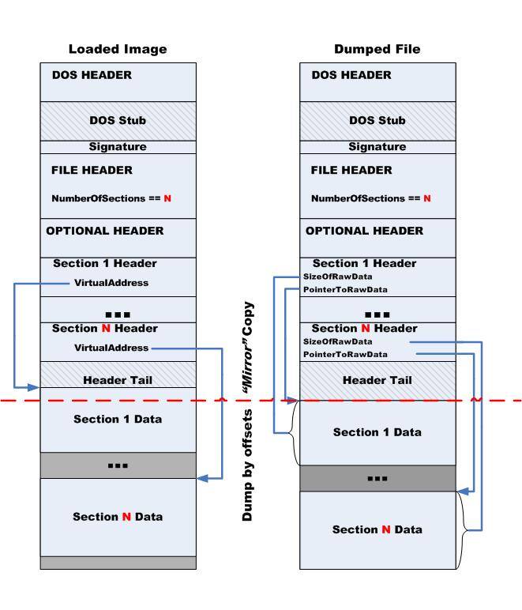

Копаясь в одном интересном boot-драйвере, который успешно скрывает информацию о себе, я довольно быстро поймал его загрузку, установив точку останова в nt!IopInitializeBuiltinDriver(...). Но загруженный образ на отлаживаемой машине, учитывая возможности дизассемблера WinDbg, мне не совсем походил. Конечно, есть команда .writemem, которая пишет дамп памяти в файл. Но после этого пришлось бы собирать из дампа нормальный PE-файл. Поэтому, посидев вечерок с чашкой кофе и трубкой, я написал расширение в WinDbg: KdExtMod.dll. Пока это расширение включает в себя только одну полезную функцию и help, но в дальнейшем я буду его развивать другими функциями работы с загруженными модулями.
Функция !pedump: воссоздание PE-файла по загруженному и развернутому в памяти образу. Формат вызова:
- Image - Адрес начала модуля или имя модуля.
- PeFileName - имя выходного PE-файла. Если файл с указанным именем существует, то он будет перезаписан.
Первый параметр трактуется следующим образом: пытаемся найти модуль с указанным именем, если нашли – дампим его. Иначе пытаемся рассчитать выражение и считаем, что результат – адрес начала целевого образа.
Алгоритм воссоздания PE-файла
Документов, описывающих формат PE-файла немалое количество. Поэтому я не буду его описывать, но если вы хотите освежить память (или никогда не работали с PE), то предлагаю скачать MS’овский документ Microsoft Portable Executable and Common Object File Format Specification.
Общая схема работы показана на следующем рисунке:

Часть рисунка, условно помеченная как "Mirror" Copy переноситься в файл прямым дампом. В эту часть входят данные:
- Заголовок MZ-DOS (IMAGE_DOS_HEADER)
- Stub-программа: память между концом заголовка и до PE-сигнатуры файла
- PE-сигнатура (ULONG)
- Обязательный заголовок (IMAGE_FILE_HEADER)
- Опциональный заголовок со всеми его директориями данных (IMAGE_OPTIONAL_HEADER). Главное не забывать, что размер хранится в IMAGE_FILE_HEADER.SizeOfOptionalHeader
- Заголовки секций. Размер этой области - ( IMAGE_FILE_HEADER.NumberOfSections * sizeof(IMAGE_SECTION_HEADER) )
- Конец заголовка файла: область памяти, расположенная после последнего заголовка секции и до смещения данных первой секции
Для всех этих данных рассчитывается смещение относительно базового адреса образа. Участки памяти записываются в файл по вычисленным смещениям.
После удачного дампа вышеописанных областей, приходит время разбирать и сохранять секции PE-файла(Dump by offsets). Здесь тоже нет ничего сложного: адрес чтения памяти берем из IMAGE_SECTION_HEADER.VirtualAddress, смещение в файле берется из поля IMAGE_SECTION_HEADER.pointerToRawData, а размер берем тот, какой он должен быть в файле - IMAGE_SECTION_HEADER.SizeOfRawData. При этом необходимо учесть следующее: упакованные файлы часто имеют секции, которые полностью состоящие из неинициализированных данных (IMAGE_SECTION_HEADER.pointerToRawData и IMAGE_SECTION_HEADER.SizeOfRawData содержат нули). Такие секции стоит пропустить при воссоздании PE-файла.
Тестируем расширение отладчика: !KdExtMod.pedump
Тестировать будем на exe-файле. Для начала качаем KdExtMod.dll, выбираем из архива необходимую сборку (x32 или x64). Копируем выбранный dll-файл в директорию "%WinDbg%\winxp\". Далее запускаем WinDbg и, например, запускаем на отладку notepad.exe: File->Open Executable. Образ уже развернут, но еще не начал исполнение.
Загружаем библиотеку расширений:
Командой lm определяем адрес загруженного модуля:
Делаем 2-а дампа notepad.exe:
Сперва убеждаемся, что файлы получились идентичны. И запускаем любой из них на исполнение: у меня блокнот замечательно отработал ;)
Скачать KdExtMod.dll с исходным кодом
ΞρεΤΙκ